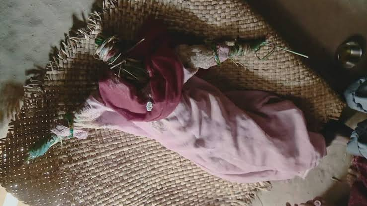

Como homenageiam e preservam a memória
Ao analisar as práticas de memória, percebi que prestar homenagem a alguém ausente pode sustentar a sua conexão à vida familiar. A homenagem nem sempre se apresenta como uma cerimónia formal: pode surgir num hábito, numa data ou na presença de uma imagem em casa.
Um dos exemplos mais significativos está no relatório Ainda? Essa é a palavra que mais dói, onde relata uma família que continua a incluir o filho desaparecido na troca de prendas do amigo secreto. O mesmo relatório menciona uma mão que reparte bolo de aniversário do filho desaparecido.
Estes gestos fizeram-me a entender a memória como uma continuidade da conexão. A pessoa permanece incluída nos eventos familiares, ainda que esteja fisicamente ausente.

Além destas práticas familiares, existem momentos coletivos de homenagem. Em 2023, a Missing People organizou o Evening of Hope, uma cerimónia em que acendiam velas enquanto eram lidos os nomes de pessoas desaparecidas. Em outro evento, Together to Remember, foram lidas mensagens de familiares, impressas em folhas e depois presas a uma árvore de memória.

Outras famílias optam por fazer uma despedida simbólica. No documentário The Doll's Funeral, é retratado uma família no Nepal que decidiu enterrar uma boneca em homenagem à filha desaparecida. Ao relacionar este testemunho com as outras referências, percebi que as práticas de memória podem ter significados diferentes: algumas mantêm a pessoas presente no quotidiano, enquanto outras assumem uma despedida.